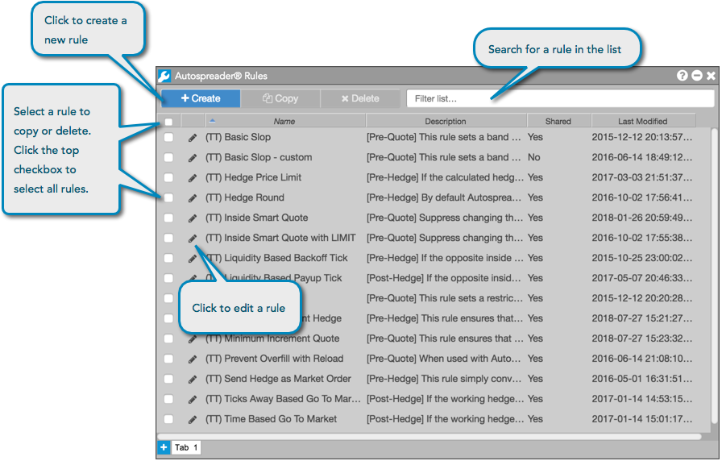

Use Autospreader Rules to design your own custom spreading logic and features and add them to a spread. While the default Autospreader Server uses conventional spreading logic, the custom rules that you design will override or add to this default spread engine behavior.
The rules that you create can be added at three critical points of a spread life cycle:
TT provides some commonly-used rules that you can add to your spread configuration. You can also create a rule or select a rule that was shared with you by your administrator. To create or add a rule, click the + button in the Rules field.
For a description of each TT rule, refer to Rule descriptions.
Launch the widget by clicking the Widgets menu in the title bar and selecting Autospreader Rules.
After you open the Autospreader Rules widget, it displays the list of rules you've created, as well as the default TT rules that are available as part of the TT platform

The Autospreader Rules widget provides the following functions: